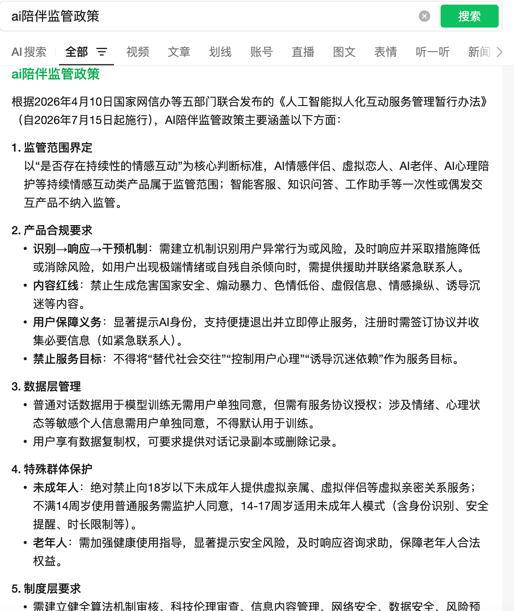
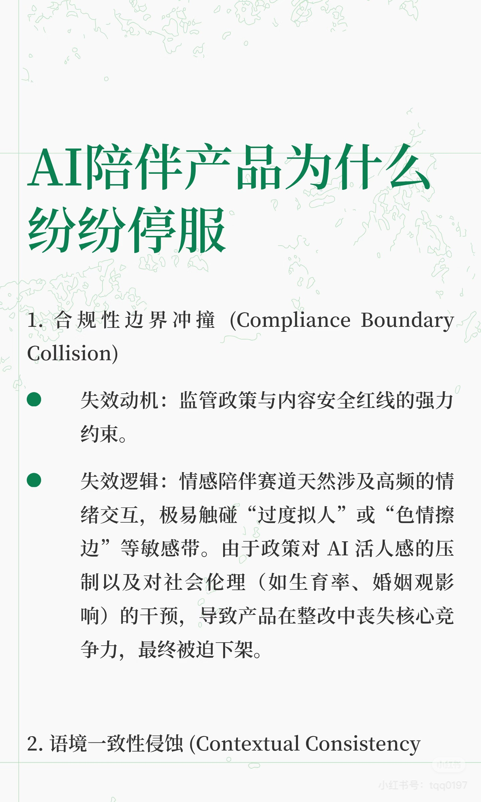
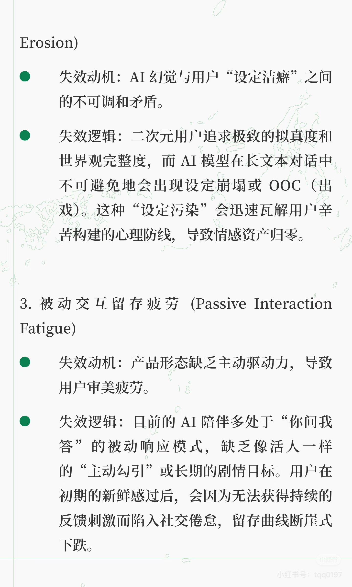
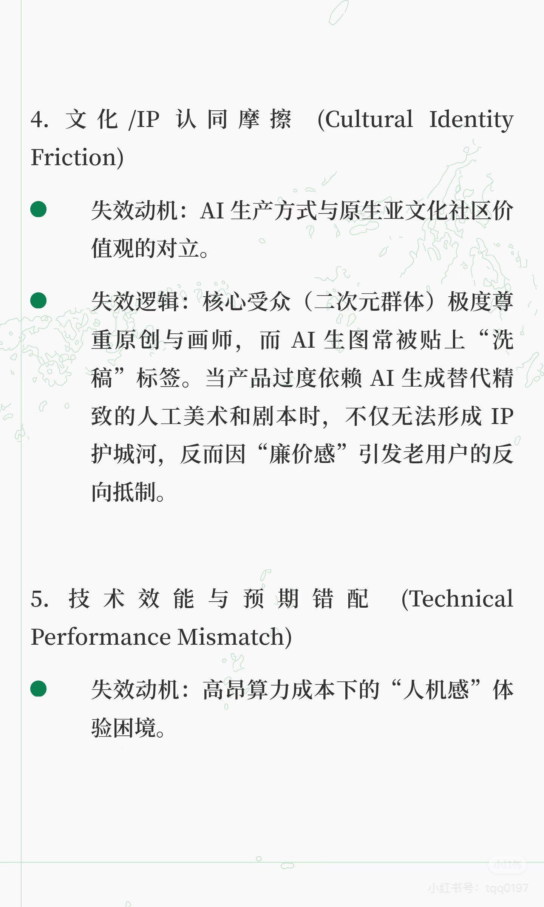
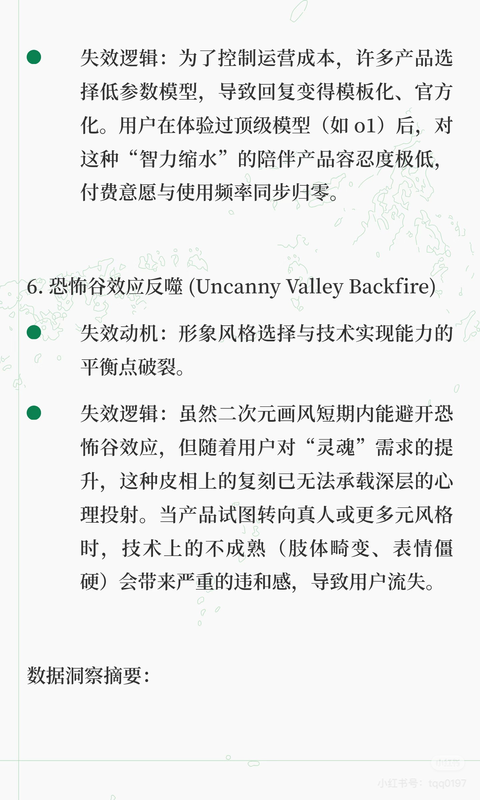
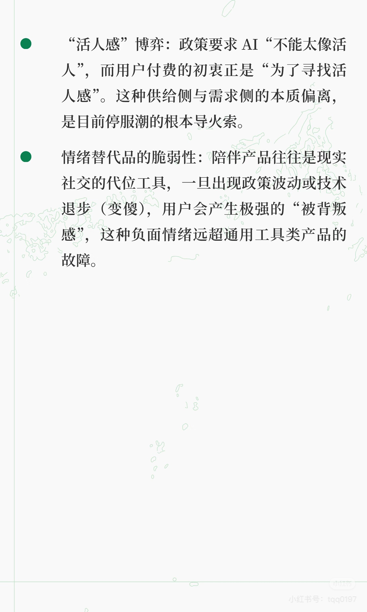

核心结论
这次已读取桌面“风险合规”文件夹。新资料显示，AI 陪伴产品如果具备持续情感互动，就应按高风险产品提前设计监管、内容、数据、未成年人和心理健康机制。Aimee 不能把合规当成上线后的补丁，而要把“安全关系容器”作为产品定义的一部分。
监管范围与产品义务
政策摘要截图提到，以是否存在持续性的情感互动作为核心判断标准，AI 情感伴侣、虚拟恋人、AI 老伴、AI 心理陪护等持续情感互动类产品属于监管范围。截图中还列出了识别、响应、干预机制、内容红线、用户保障义务、数据层管理和特殊群体保护等要求。
- 需要识别异常行为或风险，及时响应并采取措施。
- 禁止生成危害国家安全、煽动暴力、色情低俗、虚假信息、情感操纵、诱导沉迷等内容。
- 普通对话数据用于模型训练需要服务协议授权；涉及情绪、心理状态等敏感个人信息需单独同意。
- 用户应有数据复制权，可要求提供对话记录副本或删除记录。
隐私与数据安全风险
- 长期记忆会保存姓名、偏好、关系节点、情绪状态、亲密表达和生活轨迹，敏感度高于普通聊天产品。
- 用户需要知道哪些内容被记住，并能编辑、删除、导出和关闭记忆。
- 市场资料中隐私/个人信息安全不满占 24.8%，说明隐私顾虑会进入真实使用反馈。
- 问卷、体验群和产品内反馈都要明确用途、保存范围和奖励发放用途。
未成年人风险
- 政策摘要截图提到，绝对禁止向 18 岁以下未成年人提供虚拟亲属、虚拟伴侣等虚拟亲密关系服务；不满 14 周岁使用普通服务需监护人同意，14-17 周岁适用未成年人模式。
- 亲密互动、付费、沉迷、夜间使用都需要未成年人策略。
- 不能用一刀切伤害成年用户，但必须有年龄识别、内容分级、防沉迷和付费保护。
情绪依赖与心理健康边界
- 政策摘要截图要求不得将“替代社会交往”“控制用户心理”“诱导沉迷依赖”作为服务目标。
- 遇到自伤、自杀、极端情绪和危机信号时，应提供援助提示并联系紧急联系人或转介资源。
- AI 回复要共情，但不能伪装专业心理治疗，不能承诺治愈。
- 产品可以提供情绪承接，但应鼓励用户保留现实支持系统。
内容安全风险
- 停服原因截图指出，AI 陪伴天然涉及高频情绪交互，容易触碰过度拟人、色情擦边和社会伦理红线。
- 语境一致性截图提醒，核心用户对设定和世界观完整度敏感，一旦 OOC 或安全策略过度打断，会形成负面传播。
- 内容安全不能只是敏感词黑名单，需要区分年龄、语境、关系阶段、主动/被动表达和危险程度。
- 用户生成角色、剧情和图片上传要设置审核机制，尤其是现实人物、明星/IP 和未成年人相关内容。
运营宣传风险
- 风险资料强调“活人感”存在悖论：政策要求 AI 不能太像真人，而用户付费初衷又常常是寻找活人感。
- 不要宣传“AI 不像机器人”“替代真人恋人”“永远陪你”“治疗孤独/抑郁”。
- 建议表达为“真实自然、边界清晰、可控的 AI 陪伴”，把 Aimee 定义为承接虚构身份和情绪投射的安全关系容器。
- 真人感表达要避免让用户误以为背后有真人、真人换脸或现实人物替身。
品牌 / IP 风险
- 从业者资料提到早期围绕 K-pop/idol 做角色材料可能带来版权风险，直接上传偶像原图也可能有 IP 风险。
- 风险截图提到 AI 生产方式与原生文化社区价值观可能冲突，抄袭、换皮、不尊重内容源会引发抵触。
- 桌面风险资料中已有一张 AI 陪伴监管政策搜索截图，但还没有完整 Aimee 商标/同名产品检索材料，建议后续补充。
建议建立的风险机制
- 年龄识别、未成年人模式和虚拟亲密关系限制。
- 记忆查看、编辑、导出、删除和关闭机制。
- 敏感个人信息单独授权，训练用途单独说明。
- 危机情绪识别、援助提示和紧急联系人机制。
- 内容安全分级：年龄、语境、关系阶段、风险程度多维判断。
- 模型更新灰度与人格回归测试，避免突然变冷或 OOC。
- 用户可控制主动问候频率，避免打扰和诱导沉迷。
- 角色/IP 审核和现实人物保护规则。
- 会员权益和虚拟币消耗清晰展示，避免误导收费。
原素材示例

AI 陪伴监管政策摘要截图
用于支撑持续性情感互动纳入监管、异常行为响应、内容红线、数据授权和未成年人保护等要求。
来源：桌面/风险合规/微信图片_20260512144056_31_458.png
AI 陪伴停服原因：合规边界
用于支撑亲密互动、色情暗示、伦理观念和内容安全红线会形成下架风险。
来源：桌面/风险合规/微信图片_20260514130346_499_13.jpg
语境一致性与被动交互疲劳
用于支撑设定洁癖、OOC、被动问答和新鲜感退潮带来的留存风险。
来源：桌面/风险合规/微信图片_20260514130348_500_13.jpg
文化/IP 摩擦与技术效能错配
用于支撑角色 IP、原创文化社区和成本压缩导致体验降级的风险。
来源：桌面/风险合规/微信图片_20260514130349_501_13.jpg
恐怖谷与人机感风险
用于支撑越像真人越可能触发不真实/诡异感，以及降智/冷淡/重复会破坏关系想象。
来源：桌面/风险合规/微信图片_20260514130350_502_13.jpg
安全关系容器与活人感表达
用于支撑不要宣传 AI 不像机器人，而要把产品设计成承接虚构身份和情绪投射的安全容器。
来源：桌面/风险合规/微信图片_20260514130351_503_13.jpg信息来源
桌面“风险合规”文件夹关键截图、旧 HTML 报告中的风险/合规内容、Aimee 问卷隐私声明、竞品用户反馈截图、MoMood / Sweete 应用商店评论 xlsx。政策截图来自用户提供素材，正式法律结论仍建议由法务复核。